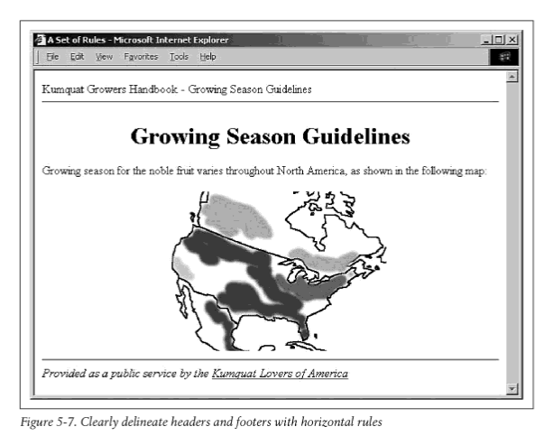
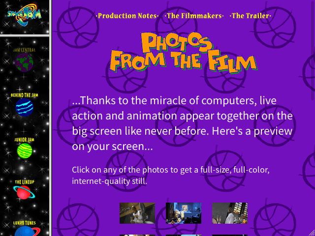
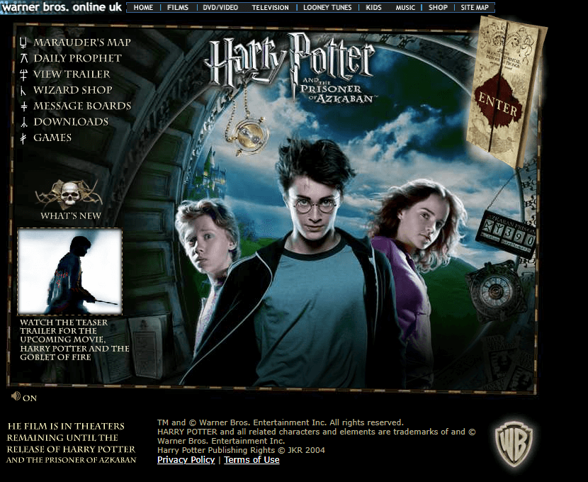
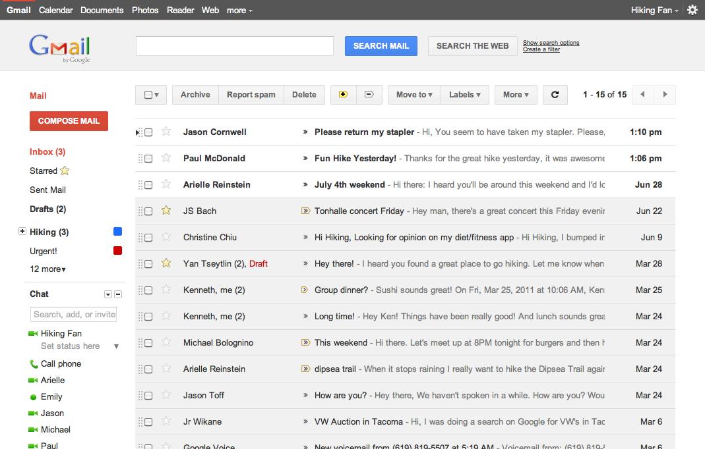
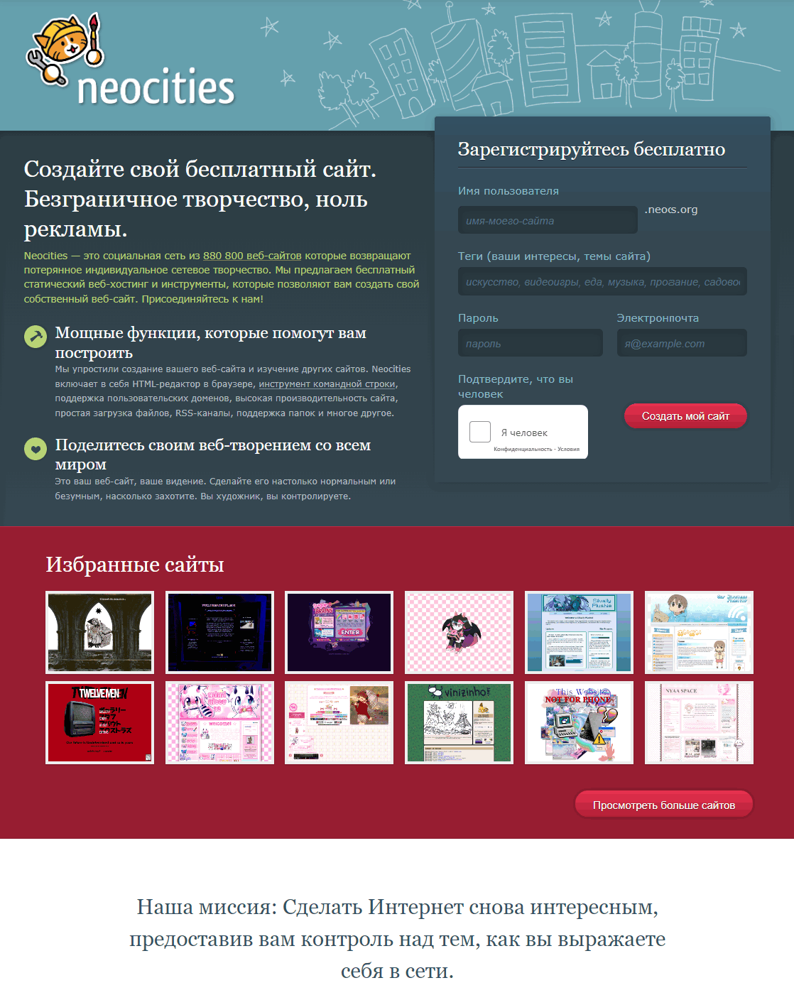
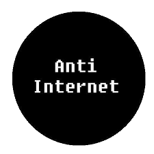
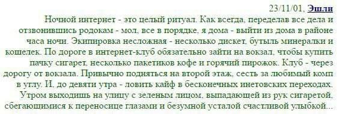
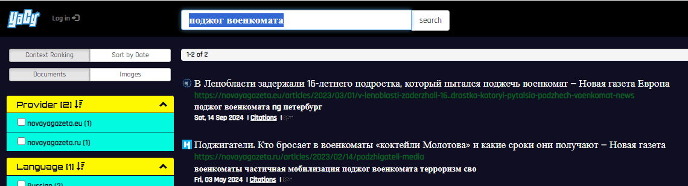
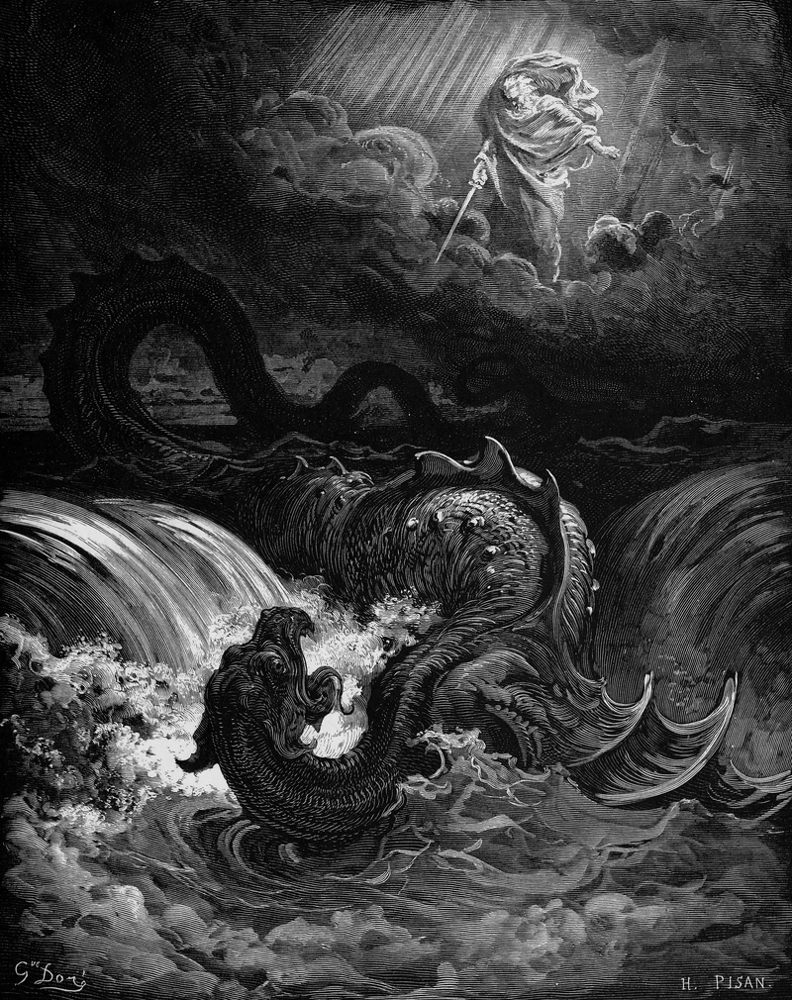

1995: БЛЯТЬ ИНТЕРНЕТ 7 М/БИТ В СЕКУНДУ

1996: ДЕЛАЕМ ПРОСТЫЕ СТРАНИЦЫ НА ЧИСТОМ HTML, ЧТОБЫ ПИЗДЕЦ БЫСТРО ГРУЗИЛО, ОХУЕННО РАБОТАЛО НА ЭКРАНАХ ЛЮБОГО РАЗМЕРА, БЫЛО ДОСТУПНО И ПОНЯТНО ДЛЯ СЛЕПЫХ / ГЛУХИХ / СТАРЦЕВ, НО ПРИ ЭТОМ РЕАЛЬНО ИСПОЛЬЗУЕМ МОЗГ, ЧТОБЫ СДЕЛАТЬ ИХ КРАСИВЫМИ

2007: НАБРОСИМ СССТИЛЯ

2015: БЛЯ ВОТ ЭТО СТИЛЬ!

2022: ИСПОЛЬЗУЕМ СКОРОСТЬ ИНТЕРНЕТА ВО ВСЮ

2025: НЕВОЗМОЖНО БОЛЕЕ СИДЕТЬ В ИНТЕРНЕТЕ БЕЗОПАСНО, КРОМЕ КАК ЧЕРЕЗ LOKINET+TOR, ЖЕЛАТЕЛЬНО С ДОП. УЗЛАМИ, ИЗ-ЗА ЧЕГО МОЙ 200 М/БИТ ИНТЕРНЕТ БЛЯТЬ 7 М/БИТ В СЕКУНДУ
2026: ПОЯВЛЯЮТСЯ ПЕРВЫЕ "САЙТЫ-УБЕЖИЩА", ДОСТУПНЫЕ ДЛЯ БЕСПОКОЯЩИХСЯ О БЕЗОПАСНОСТИ

2035: ПОЯВЛЯЕТСЯ НАСТОЯЩИЙ НОВЫЙ ИНТЕРНЕТ (ПОДОБНО WEB 3.0), КАК В СТАРЫЕ ДОБРЫЕ ВРЕМЕНА: AWEB (ANARCHIST WEB / ANTI-WEB), СОСТОЯЩИЙ ИЗ ANTISITES

пока люди придумывают модные развлечения типа БЁРДВОТЧИНГА ("птиценаблюдения" — наблюдения за птицами!), я предлагаю вам попробовать кибербезопасность. заходите в интернет только через тор, желательно ещё и со включенным локинет. ваше соединение будет отвратительно медленным. спустя время вы научитесь пользоваться интернетом так, чтобы медленности не было — надо просто перестать заходить на сайты, загружающие шрифтов на 3 гб, и пользоваться простым дерьмом на два с половиной КБ.




Понравилось? Попробуй! Даже если ты не перейдёшь на такой стиль жизни целиком, может быть, тебе понравится периодически практиковать это, пугая Левиафана своими периодическими исчезнованиями из реальности. ВКЛЮЧАЙ LOKINET+TOR И ЗАЛЕТАЙ В НАШ УЮТНЫЙ ПАРТИЗАНСКИЙ КЛУБ "ПОЛОВИНА КИЛОБАЙТА".
НА РУССКОМ
САМИЗДАТ "РЖАВАЯ СЕТЬ"
ИНКЛЮЗИВНЫЙ HTML
СТАТЬИ КОТА ИВАНА: 1 2 3 4
СТАТЬИ GH0ST IN THE $HELL:
КАКОЙ-ТО БЛОГ НА РУССКОМ
САБРЕДДИТ
ПЕРВАЯ СТРАНИЦА ИНТЕРНЕТА
512 КБ КЛУБ
250 КБ КЛУБ
1 МБ КЛУБ
NO CSS КЛУБ
NO-JS КЛУБ
РАЗНЫЕ ТЕКСТА, ПРОЗА
ФИЛИППИНСКАЯ "ИА ПАНОРАМА"
ХАКЕРСКИЕ НОВОСТИ (И ДРУГИЕ ИНТЕРЕСНЫЕ СОБЫТИЯ)
СТАТЬИ БЛОГИ ПОЭЗИЯ: 1 2 3 4 5 6
РАЗМЫШЛЕНИЯ О СТАРОЙ СЕТИ
ШИЗОСАЙТ НЕКОГДА "15-ЛЕТНЕЙ КОРОЛЕВЫ 4ЧАНА" (НЫНЕ 25)
УТВЕРЖДЕНИЕ: ДОСТАТОЧНО ОДНОГО HTML!
КРИТИКА
КРИТИКА КРИТИКИ
КРИТИКА КРИТИКИ КРИТИКИ
НИГИЛИЗМ
КРИТИКА НЕ ИСПОЛЬЗУЮЩИХ КОНТРАСТ
МУЗЕЙ ВЕБ-ДИЗАЙНА
з.ы. я знаю что ЭТОТ сайт весит 16 мб, я просто хотел КРАСИВА призвать вас к отказу от этого самого "красивого"... согрешил корочебн...
Исследование
TempleOS & old Windows friendly – ANY-BROWSER-FRIENDLY (Text-based browser (like Lynx, Links, EWW, W3M...) – JavaScript not used – 0% of data/cookies collected, not even the fact that you've ever been here – no analytics – no captcha – Tor/Lokinet users warmly welcomed)